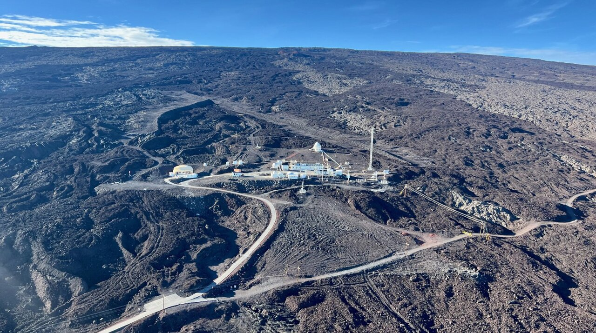
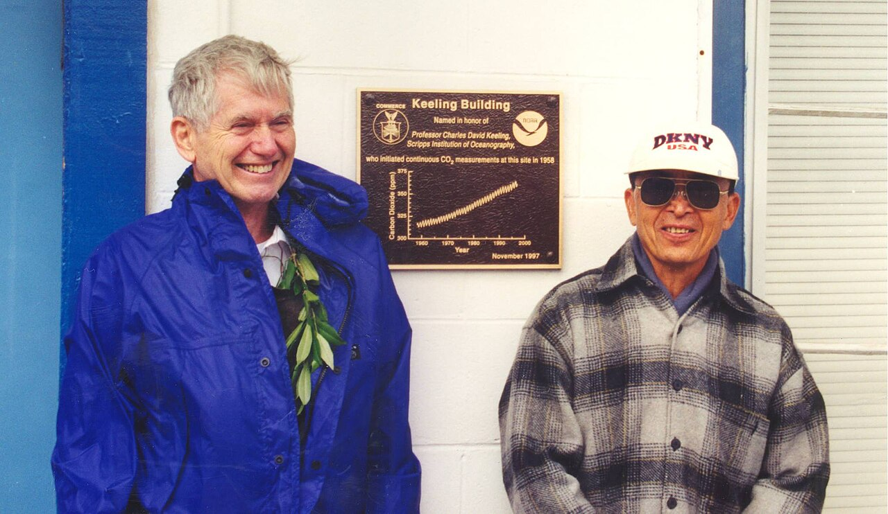
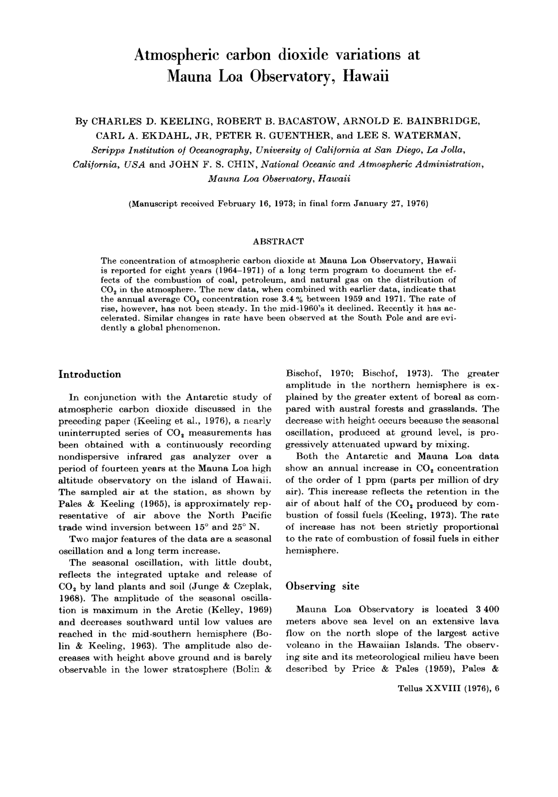

K
1976 · Keeling 论文

四种温室气体，四十年连续记录。这条曲线里藏着人类活动的印记，也藏着地球生态系统的呼吸、季节与临界。跟随时间轴，读懂大气正在经历的漫长变化。
它们都在上升，但涨幅、来源与在大气中的寿命截然不同。点击卡片可在下方时间轴中切换查看。

浓度是排放长年累积的结果。2020 年人类排放因疫情下降约 5%，大气 CO₂ 却仍在上升——这是理解碳循环最关键的一课。
为什么排放下降，浓度还在升？ 大气是一个巨大的蓄水池。只要排放大于自然系统的吸收能力，浓度就会继续累积。要稳住浓度，排放需要降到与陆地和海洋碳汇相当的水平；要降低浓度，则需要净负排放。
同样是上升曲线，季节振幅的变化反映北半球植被活动的增强；而排放被大气“截留”的比例，则揭示自然碳汇的命运。
振幅从 1979 年的约 3.98 ppm 增至近年的约 4.6 ppm。这与北半球生长季延长、植被碳吸收增强的推断一致——Keeling 早在 1976 年就注意到季节摆动在变大。
过去几十年，约 45%–50% 的排放留在大气，另一半被陆地与海洋消纳。这条比例是否长期上升，是判断碳汇是否趋于饱和的关键。
拖动温度、降水与 CO₂ 三个滑块，看陆地生态系统是继续吸碳，还是反过来向大气排碳。升温会同时推动两股力量：CO₂ 施肥让光合变强，而 Q10 效应让呼吸加速。谁跑得快，净碳汇就倒向谁。
所有数字均来自公开权威数据集，可复核、可追溯。绿色气泡中嵌入了 1976 年那篇经典论文。
CO₂ 自 1979、CH₄ 自 1983、SF₆ 自 1997、N₂O 自 2001 年起。含月均值、趋势值与各自的不确定度。末段数据为初值，会随标准气重标定而修订。
全球化石燃料与土地利用 CO₂ 排放数据，用于排放/浓度双轨图与大气滞留比例计算。排放量单位由百万吨换算为 GtCO₂。
Atmospheric carbon dioxide variations at Mauna Loa Observatory, Hawaii. Tellus。论文首页已嵌入绿色气泡，点击可查看原文摘录与 PDF 全文。
这篇论文报告了莫纳罗亚观测站 1964–1971 年八年的连续 CO₂ 观测。结合更早的数据，作者指出 1959–1971 年间全球年均 CO₂ 浓度上升了约 3.4%。
五十年前提出的“升速不稳”，在下方这条延续至今的曲线里得到了验证，并进一步演化为长期加速。论文还指出，季节振荡与长期上升是两个同时存在的独立信号——这正是本作品“季节振幅”与“浓度趋势”两条分析线的源头。
查看论文 PDF ↗